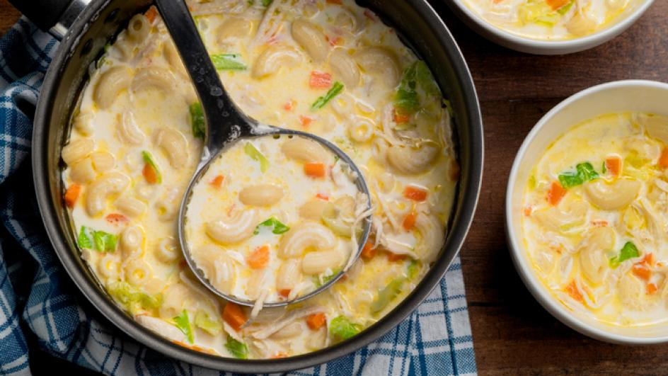

Home
Chicken Macaroni Sopas

A Classic Filipino Dish
Chicken Macaroni Sopas is a rich noodle soup, with tender chicken nestled next to elbow macaroni and carrots swirling in a savory, creamy broth. With its warm, rich taste, sopas is now a comfort food, popular especially during rainy weather.
The etymology of the word sopas comes from the Spanish word sopa, which means soup. While the origin of this Filipino dish is the American chicken noodle soup introduced during the American colonial period of the Philippines, it has been adapted to fit the Filipino palate.
Ingredients:
- 1 lb. chicken (skin removed)
- 2 ounces chopped ham (you may substitute it with chicken liver)
- 5 hot dogs sliced diagonally into 1/2 inch thick
- 1/2 lb elbow macaroni
- 4 cups chicken broth
- 6 to 8 cups water
- 1 1/2 cup fresh milk or 1 can of 14 oz. can evaporated milk
- 3 tablespoons butter
- Salt and pepper to taste
- vegetables
- 4 minced celery stalks
- 1 minced medium yellow onion
- 1 diced large carrot
- 1 1/2 cups chopped cabbage
Instructions:
- Bring the water to a boil.
- Add the chicken. Boil the chicken in low to medium heat for 45 minutes or until tender. Skim scum that may float on top.
- Remove the chicken and let cool. Set-aside the water used to boil the chicken. We'll use this later.
- Once the chicken reaches room temperature, shred the meat using your hands. Discard (throw away) the bones.
- Meanwhile, heat a clean large cooking pot.
- Pour-in the butter and oil. Once the butter and oil becomes hot, sauté the onion, carrot, and celery for 3 minutes.
- Add the shredded chicken, sliced hot dogs and chopped ham. Cook for 2 minutes or until lightly browned.
- Pour-in the chicken broth and the remaining water used to boil the chicken. Stir and let boil. Simmer for 20 minutes.
- Add the elbow macaroni. Cook for 8-10 minutes. Add more water if needed.
- Pour-in the milk. Stir and let boil.
- Add chopped cabbage and cook for about 1 minute or until tender-crisp.
- Add salt and pepper to adjust the taste.
- Transfer to a serving bowl. Serve, share and enjoy!
Home